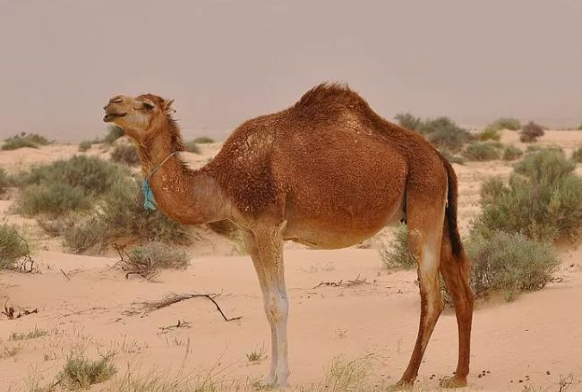
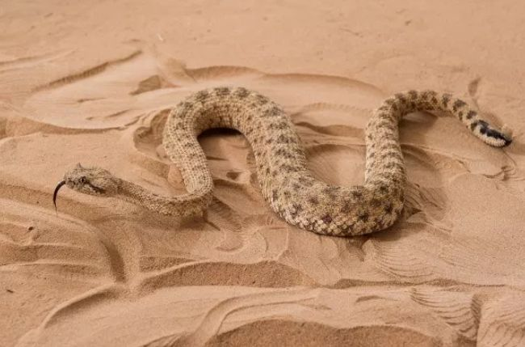
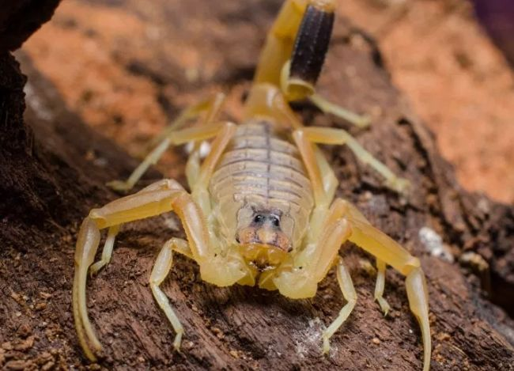
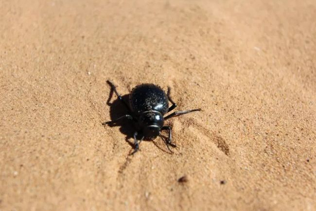
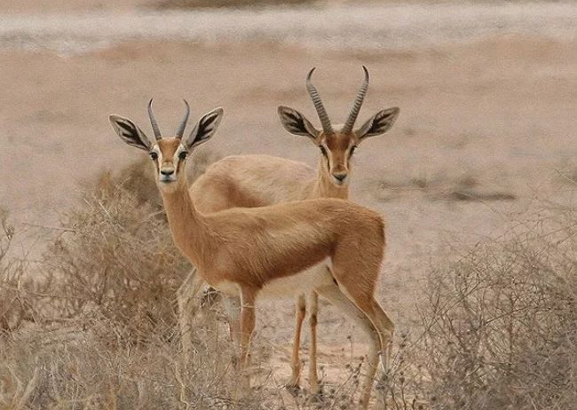
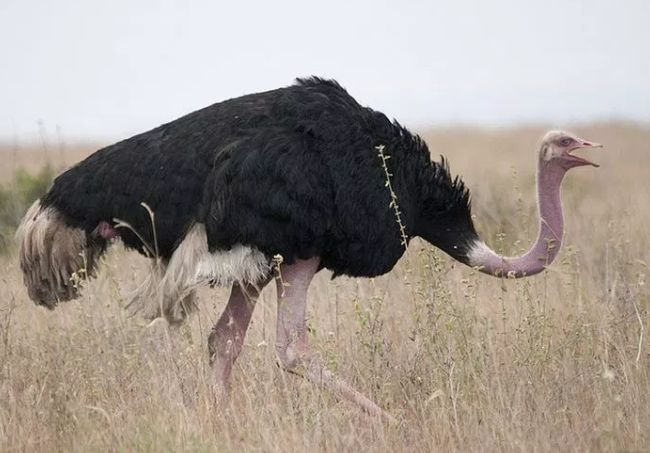
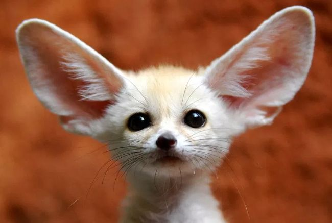
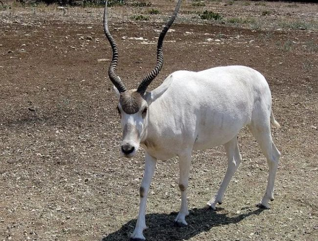
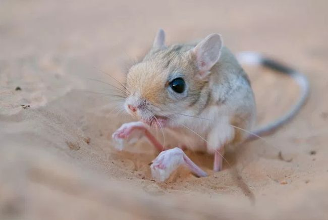
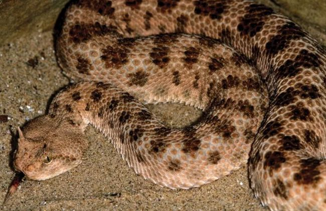

动物

人与自然需要和谐共处。
骆驼
骆驼是适应沙漠环境的最佳动物，它们几乎在撒哈拉沙漠的所有地方都能找到。它们的背上储存着脂肪，当缺乏水和食物时，它们可以将储存的脂肪转化为水和能量。

保护环境，持续发展。
响尾蛇
在撒哈拉沙漠，有许多种类的响尾蛇，它们有不同的颜色，如黄棕色和灰灰色。响尾蛇的毒液毒性很强，被咬中的人会出现严重的健康问题，甚至会导致死亡。

保护碧水蓝天，共建绿色家园。
以色列金蝎
以色列金蝎的颜色是黄色，它们可以在没有水的情况下生活更长的时间，在炎热的天气里，它们通过在洞穴和岩石下休息来保护自己不受极端高温的影响，当温度相对较低时，它们会在晚上外出觅食。

地球只有一个！
蜣螂
蜣螂存在于森林、沙漠和农田中，它们的体积很小，但身体很强壮。蜣螂的大小大多在1到4厘米之间,它们有很好的嗅觉，能从很远的地方闻到其他动物的粪便,它们吃粪便中未消化的营养物质。

爱护大自然，建设美好家园！
小鹿瞪羚
小鹿瞪羚体重约15-20公斤，长约90-110厘米，身高约55-65厘米。其皮毛是浅黄色的，他们可以长时间不喝水，通常在早上和晚上进食。

每一滴水，都可以滋润沙漠！
非洲鸵鸟
非洲鸵鸟大多生活在中非和西非，它们的重量在70-145公斤之间，高度在2.5米左右。非洲鸵鸟有很好的适应性，它们可以长时间不喝水。

手拉手保护环境，心连心爱护家园！
耳廓狐
耳廓狐是世界上最小的狐狸，其重量在1公斤左右，长度在25-35厘米之间。耳廓狐主要吃昆虫和啮齿动物，它们晚上出来吃饭喝水，白天很热的时候睡觉。

树木拥有绿色，地球才有脉搏。
藏羚羊
在撒哈拉沙漠的大部分地区都发现了藏羚羊，它很容易适应炎热的沙漠环境。由于外面很热，它们大部分时间都是在下午休息，它们在傍晚和早晨搜索食物和水。

自然在身边，保护在心中。
跳鼠
跳鼠是一种小型啮齿动物，生活在撒哈拉沙漠。跳鼠的寿命大约是6年，它们的外表和袋鼠一样，长着长长的尾巴，短的额头和长长的后腿。

建设生态市，推进生态文明。
角腹蛇
角腹蛇生活在沙漠，它们主要分布在东非和北非。角腹蛇的寿命大约是10到15年，它们的身体颜色和沙的一样，这是一种有毒的蛇，其毒性很强，被咬到的话会出现严重的健康问题甚至死亡。